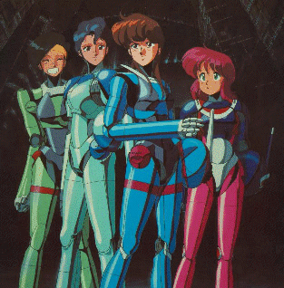

Bubblegum Crisis

Table of Contents
|
Series Information
PC Games
|
PC-Engine Games
No information available at this time.
Other Resources
Anime Web Turnpike: Bubblegum Crisis Links
Anime Video Game Resource Center © 1998 by
Luis A. Cruz